Ciclos de Charlas ReLeLa
Charlas: IA Estamos! (2026)
IA Estamos! es el ciclo de charlas organizado por RELELA junto al Departamento de Ciencias de la Computación (DCC), el Centro de Modelamiento Matemático (CMM) y la Iniciativa de Datos e Inteligencia Artificial (IDIA) de la Facultad de Ciencias Físicas y Matemáticas de la Universidad de Chile.
Arie Wortsman Zurich
Scaling Laws from Sequential Feature Recovery: A Solvable Model
Center for Data Science, ENS Paris · Miércoles 24 de junio de 2026, 15:00 — Sala Multimedia CMM (6° piso, entrada por el 7°).
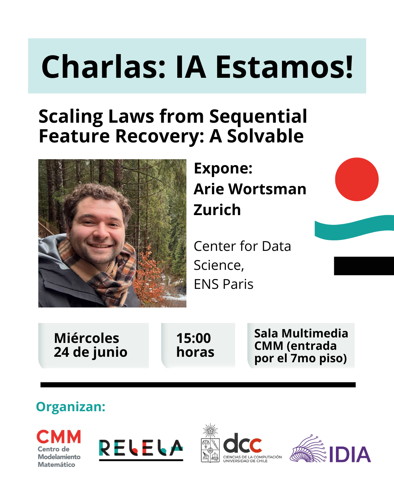
Proponemos un mecanismo simple mediante el cual las leyes de escala (scaling laws) surgen del aprendizaje de características (feature learning) en redes multicapa. Estudiamos un objetivo jerárquico de alta dimensión que es, a nivel global, una función de alto grado, pero que puede ser representado mediante una combinación de características compositivas latentes cuyos pesos disminuyen según una ley de potencias. Probamos la existencia de umbrales de recuperación precisos para cada característica y mostramos que la agregación de estas transiciones produce un decaimiento explícito en forma de ley de potencias del error de predicción. Los experimentos numéricos confirman la recuperación secuencial predicha, el suavizado de los umbrales en tamaños finitos y la separación con respecto a los modelos de referencia (baselines) de kernel no jerárquicos. En conjunto, estos resultados muestran cómo pueden surgir leyes de escala suaves a partir de una cascada de transiciones abruptas en el aprendizaje de características.
Maximilian Leutschafft
Need for Speed – Will AI Overtake Aerodynamic Simulations?
Technical University of Munich, Germany · Miércoles 17 de junio de 2026, 12:30 — OpenBeauchef.
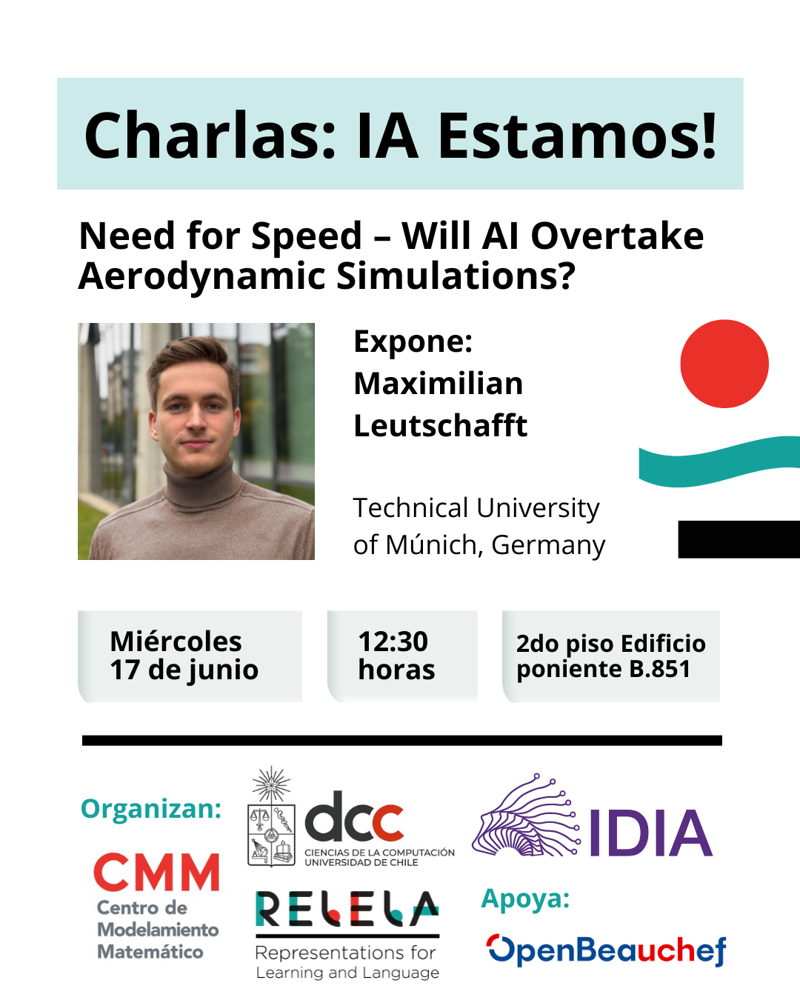
Probar diseños en simulaciones virtuales es una práctica estándar en la ingeniería moderna. Lamentablemente, estas simulaciones suelen tardar horas o incluso días en completarse, lo que limita la productividad en el área. Los modelos modernos de inteligencia artificial prometen predecir esas mismas soluciones en cuestión de segundos. Durante la presentación, cuestionaremos esta promesa, resumiremos los principios fundamentales, exploraremos soluciones de vanguardia y hablaremos sobre los obstáculos actuales.
José Guillén
A Simple Method to Enhance Pre-trained Language Models with Speech Tokens for Classification
CENIA · Miércoles 3 de junio de 2026, 12:30 — OpenBeauchef, 2° piso edificio poniente, Av. Beauchef 851.
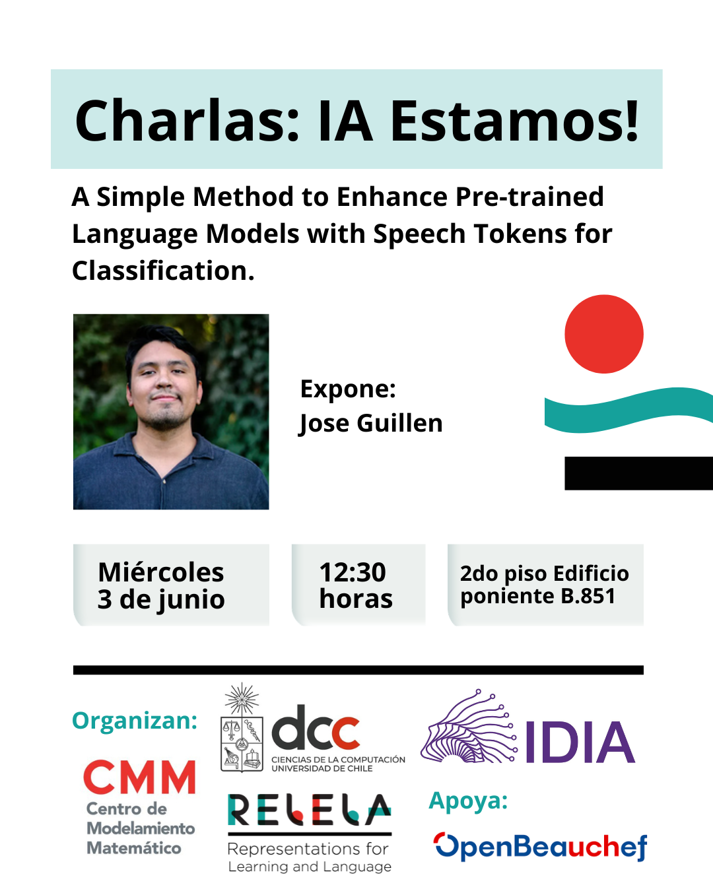
Los modelos de lenguaje suelen trabajar principalmente con texto, dejando de lado información valiosa presente en la voz, como el tono o la entonación. En esta charla se presentará un método simple y eficiente para incorporar señales de audio a modelos de lenguaje preentrenados, mejorando su desempeño en tareas de clasificación. Los resultados muestran que esta estrategia permite aprovechar información del habla de manera efectiva, obteniendo mejores resultados en aplicaciones como la detección de falacias argumentativas y el análisis de emociones.
Sobre el expositor: José Guillén es Research Engineer en CENIA y estudiante de magíster en la Universidad Técnica Federico Santa María. Su investigación se centra en aprendizaje multimodal, modelos de lenguaje, robótica social e inteligencia artificial aplicada a problemas ambientales.
Yannis Karmim
Understand memorisation and knowledge acquisition in LLM
Miércoles 6 de mayo de 2026, 12:30 — Sala P303 Philippe Flajolet, DCC.
La charla discutió cómo los grandes modelos de lenguaje memorizan y adquieren conocimiento, a partir del trabajo en un dataset para evaluar conocimiento sobre cultura LATAM.
Enlaces: Slides
Ediciones anteriores
Charlas: Las (im)posibilidades de los Modelos del Lenguaje (2023)
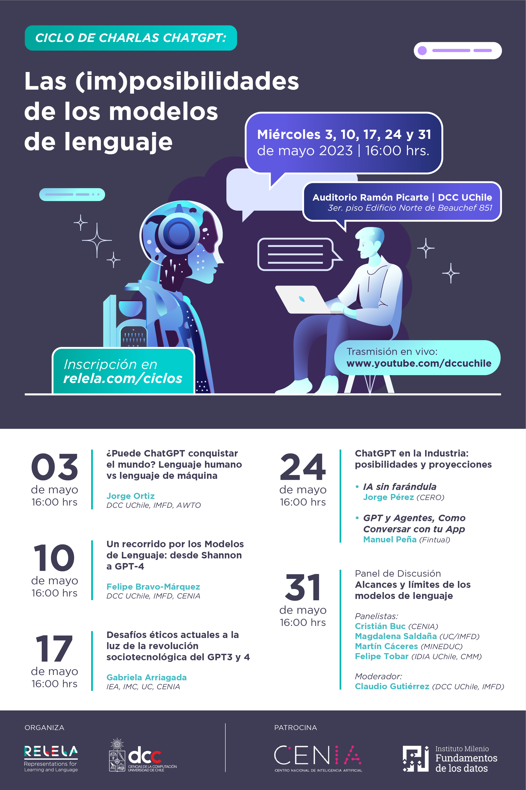
- Lugar: Auditorio Ramón Picarte, DCC UCHILE.
- Dirección: Avenida Beauchef 851, Tercer Piso, Edificio Norte, Santiago.
- Organización: RELELA, DCC Uchile.
- Patrocinadores: CENIA, IMFD.
- Será en formato híbrido y se transmitirá a través del canal de Youtube del DCC.
Inscripciones
Sobre el evento
La creciente importancia y la masividad que han adquirido recientemente los modelos de lenguaje como ChatGPT ha generado en la ciudadanía preocupaciones sobre sus condiciones de posibilidad y sus limitaciones. Debido a la naturaleza multidisciplinaria de la problemática, se requiere crear espacios de diálogo, difusión y la colaboración entre expertos de diferentes áreas.
El objetivo de este ciclo es brindar una visión amplia y crítica sobre el desarrollo y las posibilidades de los modelos de lenguaje, específicamente en relación a los últimos avances tecnológicos en el campo de la inteligencia artificial. Se busca explicar los fundamentos técnicos de estas tecnologías y fomentar la reflexión y el debate sobre el papel que juegan estos modelos en la sociedad actual, sus limitaciones y posibles riesgos, y las implicaciones éticas y sociales que plantean.
Cronograma
-
Miércoles 3 de mayo 4PM
- Presentador: Presentador: Jorge Ortiz DCC Uchile, IMFD, Awto.
- Título: ¿Puede ChatGPT conquistar el mundo? Lenguaje humano vs lenguaje de máquina (slides, grabación).
-
Miércoles 10 de mayo 4PM
- Presentador: Felipe Bravo-Márquez DCC Uchile, IMFD, CENIA.
- Título: Un recorrido por los Modelos de Lenguaje: desde Shannon a GPT-4 (slides, grabación).
-
Miércoles 17 de mayo 4PM
- Presentadora: Gabriela Arriagada, IEA, IMC, UC, CENIA.
- Título: Desafíos éticos actuales a la luz de la revolución sociotecnológica del GPT3 y 4 (slides, grabación).
-
Miércoles 24 de mayo 4PM
- Título: ChatGPT en la Industria: posibilidades y proyecciones, (grabación).
- Charla 1: "IA sin farándula" por Jorge Pérez (CERO) (slides).
- Charla 2: "GPT y Agentes, Como Conversar con tu App" por Manuel Peña (Fintual) (slides).
-
Miércoles 31 de mayo 4PM
- Título: Panel de Discusión - Alcances y límites de los modelos de lenguaje (grabación).
- Panelistas: Cristián Buc (CENIA), Magdalena Saldaña (UC/IMFD), Martín Cáceres (MINEDUC) y Felipe Tobar (IDIA Uchile, CMM). slides mini-presentación de Cristián Buc.
- Moderador: Claudio Gutiérrez (DCC Uchile, IMFD).
{kind=link}
{kind=link}
{kind=link}
{kind=link}
{kind=link}
Expositores
Felipe Bravo-Márquez
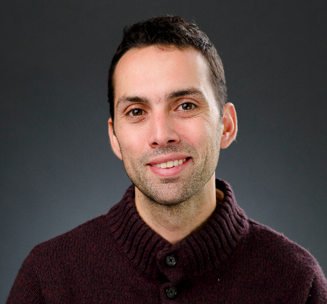
Profesor asistente en el Departamento de Ciencias de la Computación de la Universidad de Chile, Investigador Asociado del Centro Nacional de Inteligencia Artificial (CENIA) e Investigador Joven del Instituto Milenio Fundamento de los Datos (IMFD).
Realizó su doctorado en el grupo Machine Learning de la Universidad de Waikato, Nueva Zelanda, donde también trabajó como Research Fellow durante dos años. Sus intereses de investigación abarcan las áreas del procesamiento del lenguaje natural (NLP), el aprendizaje automático (ML), la inteligencia artificial (AI) y la recuperación de información (IR).
Jorge Ortiz Fuentes
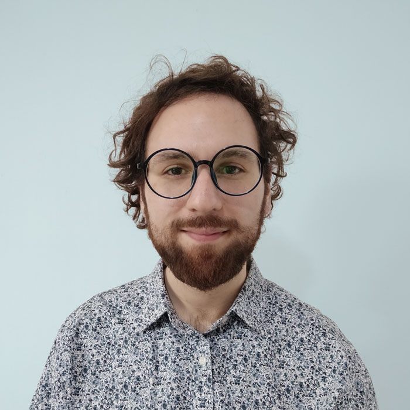
Data Scientist y Lingüista.
Licenciado en Letras Hispánicas de la Pontificia Universidad Católica, Magíster (c) en Ciencias de la Computación de la Universidad de Chile y Estudiante IMFD. Sus áreas de investigación y desarrollo abarcan el procesamiento de Lenguaje Natural, la Ciencia de Datos y la Lingüística. Actualmente se desempeña como Machine Learning Engineer en Awto.
Gabriela Arriagada
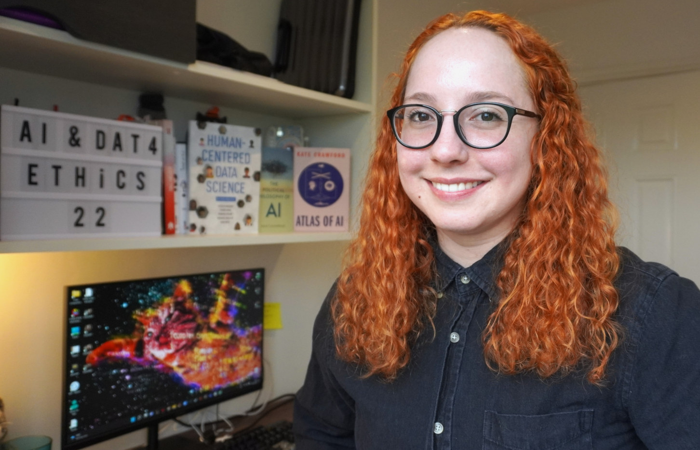
Profesora Asistente, Instituto de Ética Aplicada (IEA) & Instituto de Ingeniería Matemática y Computacional (IMC), UC, Investigadora CENIA. Candidata a Doctor en Filosofía y Ética Aplicada de la Universidad de Leeds, Inglaterra. La mayor parte de su trabajo se centra en la ética aplicada. Actualmente investiga sobre sesgo, equidad y explicabilidad en IA y ciencia de datos.
Jorge Peréz
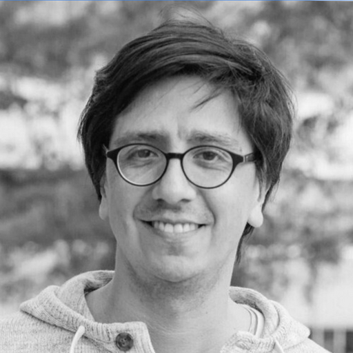
Co-Fundador de Cero.ai.
Cero.ai es una empresa que apoya a que los pacientes lleguen a sus citas a la hora y preparados. Actualmente dirige el desarrollo en inteligencia artificial del producto, y está a cargo de las ventas a instituciones públicas de salud. Antes de cero.ai fue académico e investigador universitario por más de 15 años (DCC Uchile) y estudió un PhD en Computación (UC). Su área principal de investigación es el Procesamiento de Lenguaje Natural y Redes Neuronales Profundas.
José Manuel Peña
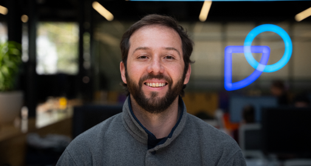
Senior Portfolio Manager en Fintual, Ingeniero Civil Industrial de la Universidad de Chile, Chartered Financial Analyst (CFA) y Master en Applied Analytics de la Universidad de Columbia en Nueva York. Ha ejercido cargos en la industria financiera en áreas de análisis, desarrollo y gestión de portafolios para clientes privados y fondos de pensiones, además de haber realizado emprendimientos en áreas de analytics e inteligencia artificial. Manu también es Regional Chair del Columbia SPS Career Coalition y miembro de la comisión de Inteligencia Artificial y Big Data del Instituto de Ingenieros de Chile.
Cristián Buc
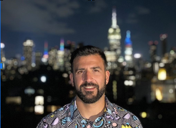
Investigador CENIA: Jefe del grupo científico @ CENIA. PhD en Neurociencias Computacionales Cognitivas de la Universidad Libre de Bruselas, postdoctorados en Ghent University y Brown University. Su área de investigación emerge de la intersección entre Neurociencias e IA. En particular, su trabajo se centra en el desarrollo de redes neuronales inspiradas en funciones y mecanismos cerebrales.
Magdalena Saldaña
Profesora Asistente de la Facultad de Comunicaciones de la Pontificia Universidad Católica de Chile e investigadora del Instituto Milenio Fundamento de los Datos.
Doctora en Periodismo y Comunicación de Masas, University of Texas- Austin (Estados Unidos). Magíster en Investigación Social y Desarrollo, Universidad de Concepción. Periodista, Universidad de Concepción. Sus áreas de investigación son: Medios digitales, comunicación política, opinión pública y estudios latinoamericanos.
Felipe Tobar
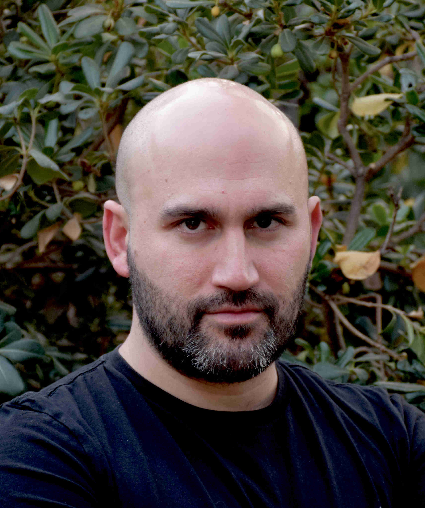
Profesor Asociado, Universidad de Chile, Director, Iniciativa de Datos e Inteligencia Artificial, Uchile, Investigador, CMM & AC3E.
Su investigación se sitúa entre el Aprendizaje Automático Estadístico y el Procesamiento de Señales, incluyendo inferencia aproximada, inferencia no-paramétrica bayesiana, estimación espectral y transporte óptimo computacional.
Martín Cáceres
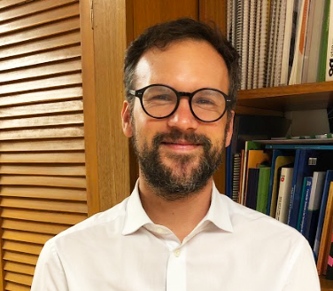
Director del Centro de Innovación MINEDUC. Licenciado en Física y Doctor en Ciencias de la Ingeniería de la Pontificia Universidad Católica de Chile.
Ha trabajado como docente en el sistema escolar enseñando física, electrónica y robótica, y en el sistema universitario ha dictado cursos de humanidades digitales y metodologías innovadoras de enseñanza y aprendizaje. Además, ha trabajado en asesorías a escuelas y universidades y en política pública relacionada con innovación pedagógica en Chile y en el extranjero.
Afiches
¿Puede ChatGPT conquistar el mundo? Lenguaje humano vs lenguaje de máquina.
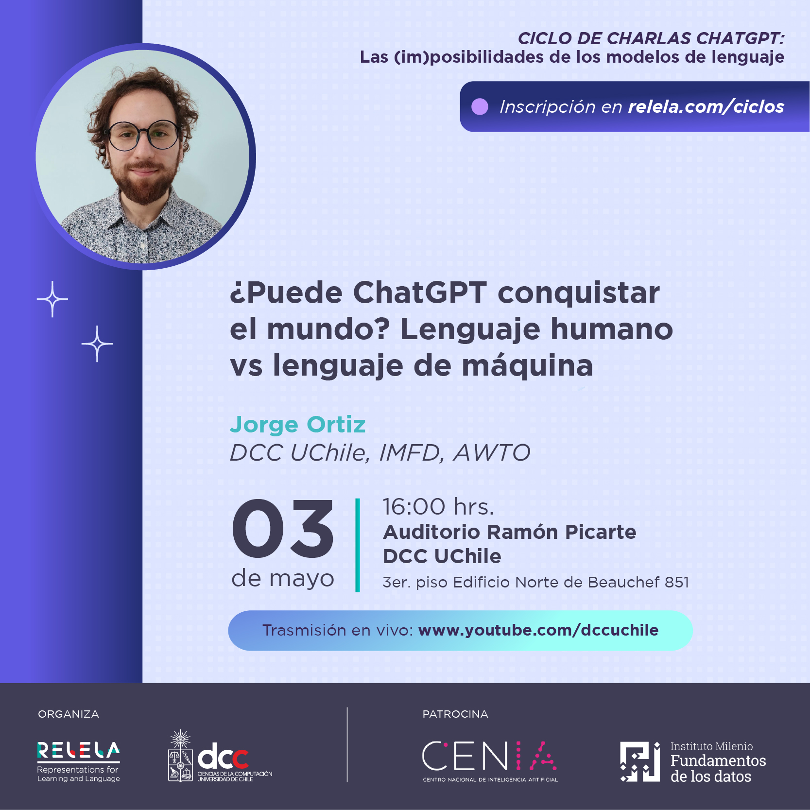
Un recorrido por los Modelos de Lenguaje: desde Shannon a GPT-4.
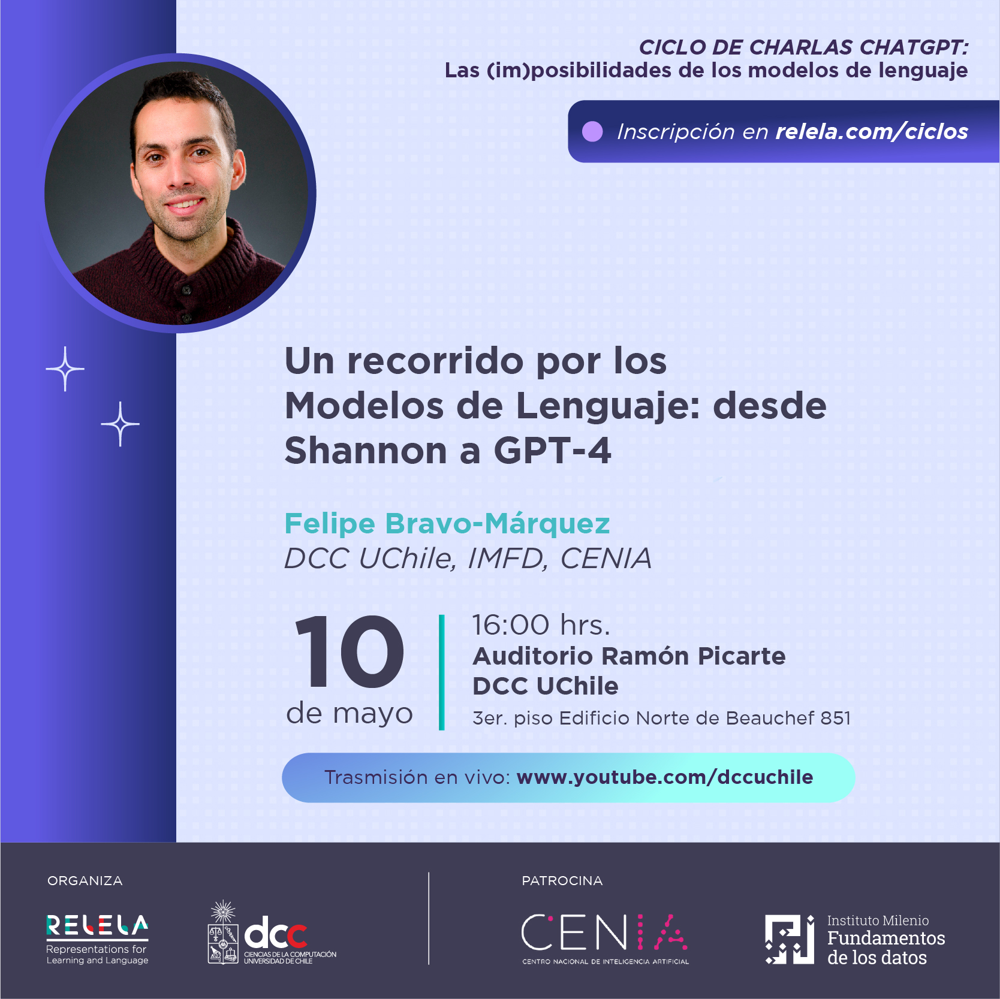
Desafíos éticos actuales a la luz de la revolución sociotecnológica del GPT3 y 4.
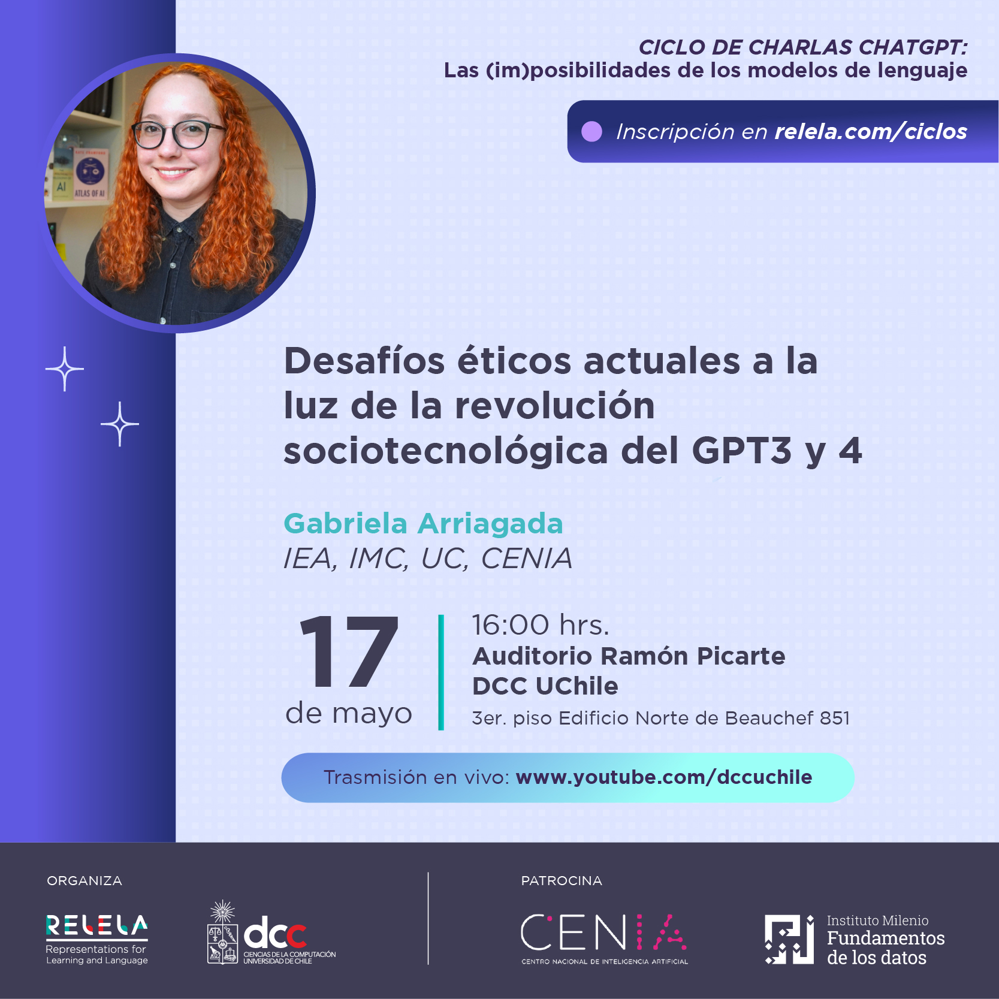
ChatGPT en la Industria: posibilidades y proyecciones.
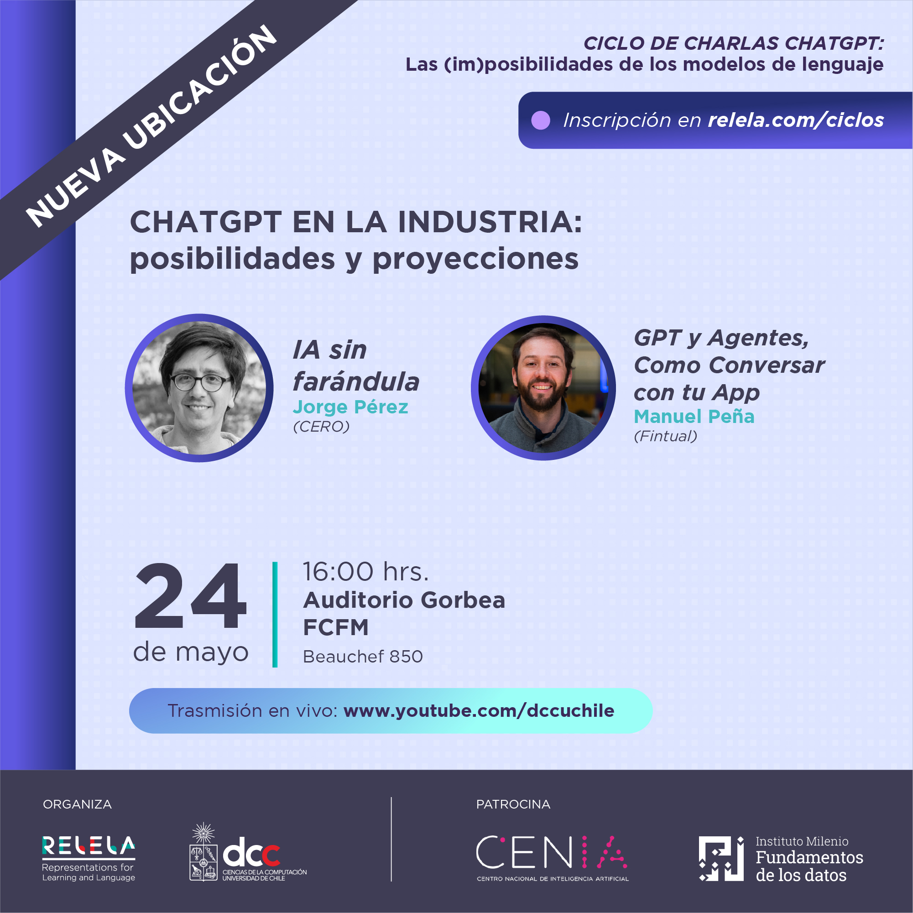
Alcances y límites de los modelos de lenguaje.
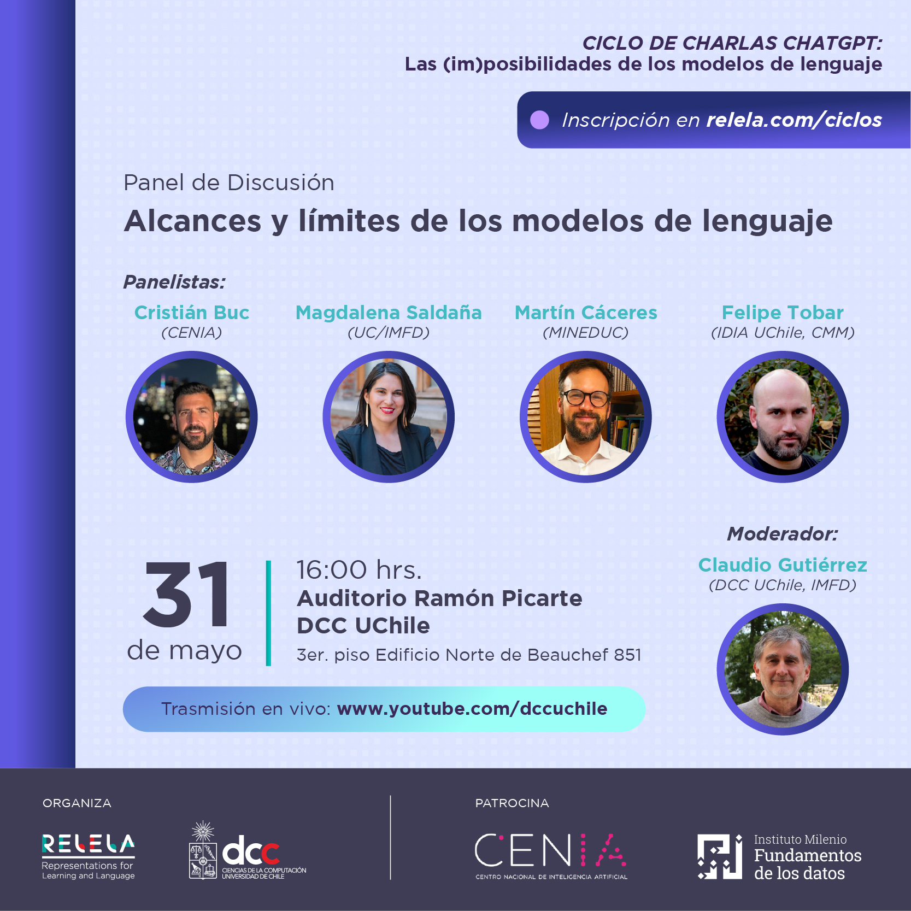